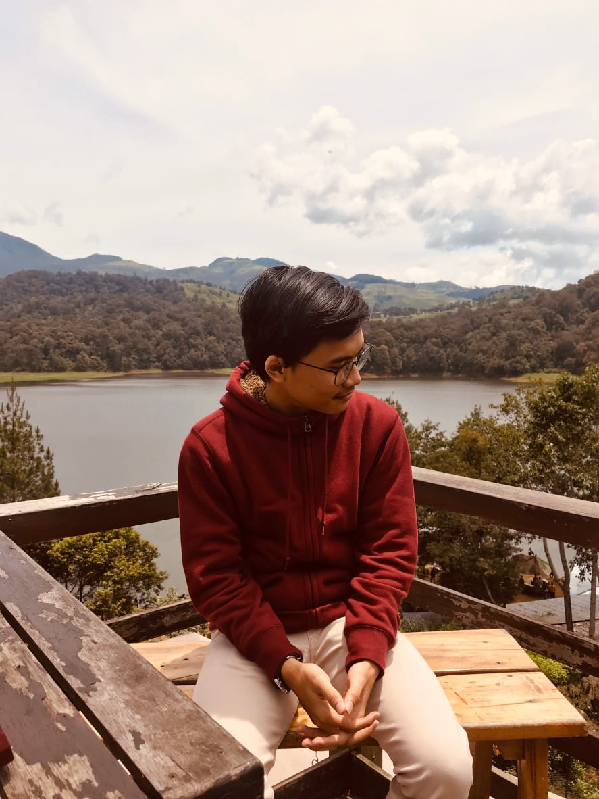

Candramawa
Kelompok Mata Kuliah Proyek-01
Motto
Yel Yel
Bagaikan langit.
Di sore hari.
Berwarna biru.
Sebiru hatiku.
Kayis Shalahuddin
Segala hal itu Relatif dan Konstan

Keterangan Anggota 1
Cita-cita : Dosen, Kritikus
Hobby : Membaca, Menghemat energi, Mengkritik
Role : Leader
Mohammad Rizky Maulidhan
Analyst
"To infinity and beyond." - Buzz Lightyear
About Me
Hobbies : Watching movie, playing a game, and playing guitar.
TK : TK Tunas Karya
SD : SDN Cikandang 1
SMP : SMPN 1 Cikajang
SMA : SMAN 1 Garut
Vision : Big Boss
Dzakira Fabillah - Designer
" Dipuji tidak terbang
Dihina tidak tumbang"
About Dzakira
Cita-cita : Entrepreneur
Hobi : membaca, menonton, menulis
Asal Sekolah : SMAN 24 BANDUNG
Nisa Shadrina - Desainer
Puan swastamita, yang memiliki banyak cita
"Be the best version of yourself"
Seorang Gadis Garut
Hobi : Membaca novel
Cita - cita : Seorang poliglot
Asal Sekolah : SMAN 1 Garut
Fachri Dhia Fauzan
“Dunia terus bergerak tanpa menunggumu.”
Biodata
Tanggal Lahir : 6 Juli 2000
Cita Cita : Pengusaha
Hobi : Travelling
Asal Sekolah
SMAN 5 Bandung
5 Ter-Pendiem
1. Dzakira
2. Nisa
3. Kayis
4. Rizky
5. Bima
Bima Putra S - Programmer
"The game is on !" - Sherlock Holmes
Keterangan Anggota 6
Press any key to continue...
Hobi = Dota 2
Asal Sekolah = SMK N 1 Cimahi
Cita-Cita = Ga ada